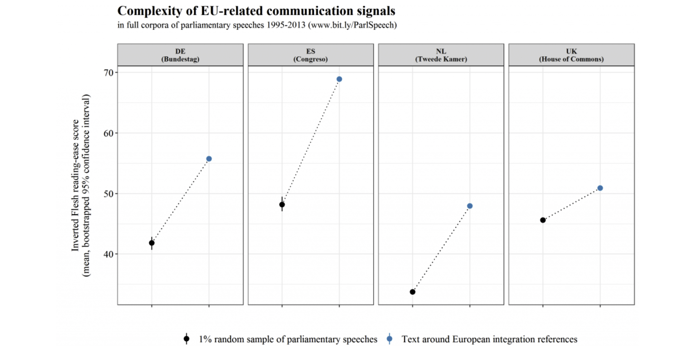

Welcome to Quanteda Tutorial part 2
This tutorial will cover Frequency and Sentiments Analysis in Quanteda. The learning goals of this tutorial are
- Review tokens and dfm objects
- Keyword analysis
- Frequency analysis
- Lexical diversity analysis
- Measuring readability
- Sentiment analysis (using dictionaries)
- Preview of other methods
1. Review of the data frame matrix (dfm)
A DFM is a matrix of documents (rows) by “features” (columns), representing frequencies of features by document.
- Features are (selected) types, possibly transformed (such as through stemming). But could also be dictionary categories.
- DFMs are sparse, in that only non-zero cells are recorded
- The most efficient structure, but it does not have information on positions of words
- Non-positional (bag-of-words) analysis are performed using many of the textstat_* and textmodel_* functions
dfm review exercise
Below we use the data_char_ukimmig2010 data, a sample
dataset from the quanteda.textmodels package. We have
created a corpus and tokenised the data for you.
- Create a document-feature matrix from the
toks_immigobject, and call itdfm_immig. - Get the 50 most frequent terms from
dfm_immigusingtopfeatures(). - That doesn’t look right, we need to remove punctuation and stopwords! First let’s remove the punctuation. Run your code again to test the punctuation has been removed.
- Now remove the stopwords. Run your code again to test the outcome.
- Finally, it is often useful to remove a word to its stem
(e.g. taxing and taxes both get stemmed to tax). Use
tokens_wordstem()to stem your tokens. Run your code again and review how the output has changed.
library("quanteda")
library("quanteda.textmodels")
corp_immig <- corpus(data_char_ukimmig2010)
toks_immig <- tokens(corp_immig)
dfm_immig <- library("quanteda")
library("quanteda.textmodels")
corp_immig <- corpus(data_char_ukimmig2010)
toks_immig <- tokens(corp_immig, remove_punct = TRUE) %>%
tokens_remove(stopwords("en")) %>%
tokens_wordstem(language = "en")
dfm_immig <- dfm(toks_immig)
topfeatures(dfm_immig, n = 50)dfm_immig <- dfm(toks_immig)
topfeatures(dfm_immig, n = ...)tokens(corpus, remove_punct = ...)tokens(corpus, remove_punct = ...) %>%
tokens_remove(stopwords(language = ...))2. Keyword analysis
Keywords-in-context (KWIC)
Keywords-in-context are a tool for visualising every instance where a
selected word or phrase appears. In Quanteda we use the
kwic() function, which returns a list of one or more
keywords and its immediate context, identifying the source text and the
word index number within the source text.
Note: kwic() takes a character, corpus or tokens object
as it’s argument.
Exercise 1: Testing out kwic
- Run the code below to see the first 3 occurrences of the keyword
“security” in context
- Change the window parameter from 3 to 5. What is the change in
output when you run
head(kw_security, 3)? - Change the pattern to “secur*”. What is the difference to the outputs?
library("quanteda")
# prepare tokens
data_tokens_inaugural <- tokens(data_corpus_inaugural)
# make keyword-in-context object
kw_security <- kwic(data_tokens_inaugural, pattern = "security", window = 3)
# print number of keywords-in-context
paste0("number of occurrences of this keyword in context: ", nrow(kw_security))
# show first three rows of keyword-in-context object
head(kw_security, 3)Note that kwic() function allows us to use different
types of pattern matching such as wildcards, phrases, and regular
expressions. Check out the Quanteda documentation
for more information.
Exercise 2: Find economy keywords
Use the kwic() function to find the keywords in context
for the keyword “economy”, using the
data_tokens_inaugural object. Use a window of 4, and view
the first 5 rows
library("quanteda")
data_tokens_inaugural <- tokens(data_corpus_inaugural)
kw_economy <- kwic(..., pattern = "...", window = ...)paste0("Number of kwic for economy ", nrow(kwic_object))Question: How many occurrences are there of the keyword in context “economy”?
KWIC with phrases
The kwic() function also works with multi-word
expressions (phrases). We use the phrase()
function from the pattern argument to look up multi-word expressions. In
our example, we look for the phrase “United States”.
data_tokens_inaugural <- tokens(data_corpus_inaugural)
kw_US <- kwic(data_tokens_inaugural, pattern = phrase("United States"), window = 3)
head(kw_US, 3)
paste0("The phrase 'United States' appears ", nrow(kw_US), " times in inaugural speeches")On a side note, if we remove punctuation and stopwords the output looks slightly different as we are removing some of the context. It is harder to see the full sentence the keyword or phrase was in, which can make it harder to interpret.
tokens(data_corpus_inaugural, remove_punct = TRUE) %>%
tokens_remove(stopwords("en")) %>%
kwic(pattern = phrase("United States"), window = 3) %>%
head(3)Exercise 3: Phrases
In what context were “God” and “God bless” used in US presidential inaugural speeches after 1970?
- Subset your data_tokens_inaugural object to include inaugural speeches after 1970.
- Pipe the result to
kwic()and search for the keyword god. Use a window of three. Store the result as kw_god. - Repeat steps 1 and 2, but this time search for the phrase god bless. Store the result as kw_god_bless.
- Send the results of your kwic outputs to
textplot_xray(). Make sure to put both kw_god and kw_god_bless in the sametextplot_xray()function. - As
textplot_xray()gives us a ggplot2 object, we can make some changes. Add the following code aftertextplot_xray():+ aes(colour = keyword) + scale_colour_manual(values = c("#ffa400", "#009ffd")) + theme(legend.position = "none").
Note the textplot_xray() shows us the relative
position of the keyword or phrase in the inaugural speeches
data_tokens_inaugural <- tokens(data_corpus_inaugural)
kw_god <-
kw_god_bless <-kw_god <- tokens_subset(data_tokens_inaugural, Year > 1970) %>%# make sure to use the phrase() function
kwic(pattern = phrase("god bless"), window = 3)data_tokens_inaugural <- tokens(data_corpus_inaugural)
kw_god <- tokens_subset(data_tokens_inaugural, Year > 1970) %>%
kwic(pattern = "god", window = 3)
kw_god_bless <- tokens_subset(data_tokens_inaugural, Year > 1970) %>%
kwic(phrase("god bless"), window = 3)
textplot_xray(kw_god, kw_god_bless) +
aes(colour = keyword) +
scale_colour_manual(values = c("#ffa400", "#009ffd")) +
theme(legend.position = "none")Question: Looking at the lexical dispersion plot, where in the post-1970 US presidential inaugural speeches does the phrase “God bless” appear most frequently?
3. Frequency analysis
Simple frequency analysis
Quanteda is a powerful tool for textual statistics. It has several useful functions for making frequency analysis easier.
Run the code below to see results for a simple frequency analysis
using textstat_frequency() which will return the top 15
features and the frequency they occurred in the dfm supplied.
library("quanteda.textstats")
data(data_corpus_irishbudget2010, package = "quanteda.textmodels")
ire_dfm <- tokens(data_corpus_irishbudget2010,
remove_punct = TRUE,
remove_symbols = TRUE) %>%
tokens_remove(stopwords("en")) %>%
dfm()
textstat_frequency(ire_dfm, n = 15)A fun way to visualise frequency textual data is using wordclouds. We
can use the textplot_wordcloud() function from the
quanteda.textplots library to make a word cloud from our
ire_dfm.
library("quanteda.textplots")
ire_dfm <- tokens(data_corpus_irishbudget2010,
remove_punct = TRUE,
remove_symbols = TRUE) %>%
tokens_remove(stopwords("en")) %>%
dfm()
# create palette for word cloud
palette <- c("#734f5a","#264653","#2a9d8f","#e9c46a",
"#f4a261","#e76f51","#941c2f","#c05761")
textplot_wordcloud(ire_dfm, min_count = 15,
rotation = 0.25, random_order = FALSE,
color = palette)Question: Looking at the output of textstat_frequency and textplot_wordcloud, what words appear most frequently in the 2010 Irish Budget?
Frequency analysis for groups
textstat_frequency() works for groups too. We can do
this because the document-feature matrix has document variables which
are categorical. To find these out we can use the docvars()
function on our dfm object, like docvars(dfm), in our
example it would be docvars(ire_dfm).
Exercise 1: grouping top features
- Using
head()explore the first 5 document variables ofire_dfm. - Using
textstat_frequency(). Find the top 2 words by political party. This works because “party” is a document variable.
library("quanteda.textstats")
data(data_corpus_irishbudget2010, package = "quanteda.textmodels")
ire_dfm <- tokens(data_corpus_irishbudget2010,
remove_punct = TRUE,
remove_symbols = TRUE) %>%
tokens_remove(stopwords("en")) %>%
dfm()docvars(ire_dfm)textstat_frequency(dfm, groups = ..., n = ...)Exercise 2: visualising top features
We can use ggplot2 to visualise the top features from a
dfm. We will plot the top 15 words from the ire_dfm. We have provided
the basic structure for you to build on.
- Within the
aes()function, add feature as x and frequency as y. - Add
geom_point()to your figure. You should now be able to view your figure! - Change the order of your x axis to be ordered by frequency. We do
this using the
reorder()function (use a hint if you get stuck). - Add a
coord_flip()function to adjust the coordinates. This allows us to view the x axis text better. - Finally, adjust the labels of the figure using the
labs()function. We want the x label to be empty and the y label to just say Frequency.
library("ggplot2")
data(data_corpus_irishbudget2010, package = "quanteda.textmodels")
ire_dfm <- tokens(data_corpus_irishbudget2010,
remove_punct = TRUE,
remove_symbols = TRUE) %>%
tokens_remove(stopwords("en")) %>%
dfm()
ire_freqplot <- ire_dfm %>%
textstat_frequency(n = 15) %>%
ggplot(aes())
ire_freqplotlibrary("ggplot2")
data(data_corpus_irishbudget2010, package = "quanteda.textmodels")
ire_dfm <- tokens(data_corpus_irishbudget2010,
remove_punct = TRUE,
remove_symbols = TRUE) %>%
tokens_remove(stopwords("en")) %>%
dfm()
ire_freqplot <- ire_dfm %>%
textstat_frequency(n = 15) %>%
ggplot(aes(x = reorder(feature, frequency),
y = frequency)) +
geom_point() +
coord_flip() +
labs(x = NULL, y = "Frequency")
ire_freqplotx = reorder(feature, frequency)labs(x = NULL, y = "Frequency") The ggplot2 package is very flexible and allows to us to really take our figures to the next level. Here we have made some adjustments to our previous figure to make it look even better. In this case we have turned our figure into a lollipop plot.
We’ve made several adjustments here such as adding text to show the frequency, adding a title, as well as changing the font.
data(data_corpus_irishbudget2010, package = "quanteda.textmodels")
ire_dfm <- tokens(data_corpus_irishbudget2010,
remove_punct = TRUE,
remove_symbols = TRUE) %>%
tokens_remove(stopwords("en")) %>%
dfm()
ire_dfm %>%
textstat_frequency(n = 15) %>%
ggplot(aes(x = reorder(feature, frequency),
y = frequency)) +
geom_point(size = 8.5) +
geom_linerange(aes(x = feature, ymin = 104, ymax = frequency),
linewidth = 1.2, lineend = "round") +
geom_text(aes(label = frequency),
colour = "white") +
coord_flip() +
labs(title = "Top features from the 2010 Irish Budget",
x = NULL, y = "Frequency") +
theme_minimal(base_family = "Avenir") +
theme(plot.title.position = "plot")Relative frequency analysis (keyness)
Keyness assigns scores to features that occur differentially across different categories. It uses a target and a reference group to compare the differences.
In our example we want to compare speeches from the 2010 Irish budget debate. Our categories are the government at the time (FF and Green) and the opposition (everyone else).
Quanteda has the textstat_keyness() function to help us
with calculating keyness. textstat_keyness() by default
uses the Chi-square test, which is used to determine whether two
categorical variables are likely to be related.
Exercise: Keyness
We have prepared the data for you, including making a categorical variable for the target/opposition comparison, converting to tokens, dealing with stopwords, then making it into a dfm.
- Use
textstat_keyness()on dfmat_key, using the target “Opposition”. - Use
textplot_keyness()to plot your tstat_key object. Limit the number of features included to 10.
library("quanteda.textplots")
data(data_corpus_irishbudget2010, package = "quanteda.textmodels")
# categorise parties
data_corpus_irishbudget2010$gov_opp <-
ifelse(data_corpus_irishbudget2010$party %in%
c("FF", "Green"), "Government", "Opposition")
# compare government to opposition parties by chi^2
dfmat_key <- data_corpus_irishbudget2010 %>%
tokens(remove_punct = TRUE, remove_symbols = TRUE, remove_numbers = TRUE) %>%
tokens_remove(stopwords("en")) %>%
tokens_group(groups = gov_opp) %>%
dfm()tstat_key <- textstat_keyness(..., target = "...")tplot_key <- ...(..., margin = 0.2, n = 10)
tplot_keylibrary("quanteda.textplots")
data(data_corpus_irishbudget2010, package = "quanteda.textmodels")
# categorise parties
data_corpus_irishbudget2010$gov_opp <-
ifelse(data_corpus_irishbudget2010$party %in%
c("FF", "Green"), "Government", "Opposition")
# compare government to opposition parties by chi^2
dfmat_key <- data_corpus_irishbudget2010 %>%
tokens(remove_punct = TRUE, remove_symbols = TRUE, remove_numbers = TRUE) %>%
tokens_remove(stopwords("en")) %>%
tokens_group(groups = gov_opp) %>%
dfm()
# run keyness statistics
tstat_key <- textstat_keyness(dfmat_key, target = "Opposition")
# visualise
textplot_keyness(tstat_key, margin = 0.2, n = 10)4. Lexical diversity
Lexical diversity is an indicator of the complexity of text, as well as how easy text is to read. Lexical diversity, as the name suggests, tries to find out how many lexical words, and thus how diverse, a text is. Lexical words are words such as verbs, adverbs, and adjectives.
For this exercise we will look at the lexical diversity of speeches from the Irish Budget 2010.
Quanteda has the textstat_lexdiv() function to help us
with calculating lexical diversity. textstat_lexdiv() by
default uses the Type-Token Ratio, but has many other options available
such as Carroll’s Corrected TTR and Simpson’s D. More
information can be found on the quanteda
documentation.
Exercise: Lexical Diversity
We have done the initial data preparation for you, converting the corpus to tokens, and removing everything but stopwords.
- Fill in the blank measures in the
textstat_lexdiv()function. We want to measure the Type-Token Ratio (TTR), Carroll’s Corrected TTR (CTTR) and Simpson’s D (D). - We want to combine our document variables to our
tstat_lexdiv data frame. Add the dfmat_ire data to the
docvars()function. - We also want to include the token counts in our data. Change the … to the name n_tokens.
- Finally, we want to plot our results. Make the y axis the TTR measure, and colour should be n_tokens.
- Change the measure used from TTR to CTTR or D. What difference do you see?
library("ggplot2")
dfmat_ire <- tokens(data_corpus_irishbudget2010,
remove_punct = TRUE,
remove_numbers = TRUE,
remove_symbols = TRUE) %>%
dfm()
tstat_lexdiv <- textstat_lexdiv(dfmat_ire, measure = c("...", "...", "..."))
df_lexdiv <- cbind(tstat_lexdiv, docvars(...))
df_lexdiv <- cbind(tstat_lexdiv, ... = ntoken(dfmat_ire))
head(df_lexdiv, 4)
tplot_ttr <- ggplot(df_lexdiv, aes(
x = reorder(document, TTR),
y = ..., colour = ...)) +
geom_point() +
coord_flip() +
labs(x = NULL)
tplot_ttrlibrary("ggplot2")
dfmat_ire <- tokens(data_corpus_irishbudget2010,
remove_punct = TRUE,
remove_numbers = TRUE,
remove_symbols = TRUE) %>%
dfm()
tstat_lexdiv <- textstat_lexdiv(dfmat_ire, measure = c("TTR", "CTTR", "D"))
df_lexdiv <- cbind(tstat_lexdiv, docvars(dfmat_ire))
df_lexdiv <- cbind(tstat_lexdiv, n_tokens = ntoken(dfmat_ire))
head(df_lexdiv, 4)
tplot_ttr <- ggplot(df_lexdiv, aes(
x = reorder(document, TTR),
y = TTR, colour = n_tokens)) +
geom_point() +
coord_flip() +
labs(x = NULL)
tplot_ttrtextstat_lexdiv(dfmat_ire, measure = c("TTR", "CTTR", "D"))docvars(dfmat_ire)aes(x = reorder(document, TTR), y = TTR, colour = n_tokens)Question: Looking at the output, which of the speakers in the 2010 Irish Budget debate has the most lexical diversity according to the Type-Token Ratio (TTR)?
Notice how in our figure with Type-Token Ratio (TTR), those with the highest lexical diversity also have the least number of tokens, and those with the lowest lexical diversity have the most tokens.
This is likely because those with more tokens had longer speeches and therefore likely repeated words, lowering their lexical diversity score for TTR. TTR works well if the number of tokens for text being compared is similar. In our case there is a broad range from 919 tokens through to 7720 tokens!
If we review the other two measures we used, CTTR and D, the lexical diversity score changes. Can you spot in the two figures were Gormley, John (Green) has moved to?
run the code to view the figures
tplot_cttr <- ggplot(df_lexdiv, aes(
x = reorder(document, CTTR),
y = CTTR, colour = n_tokens)) +
geom_point() +
coord_flip() +
labs(x = NULL)
tplot_cttr
tplot_d <- ggplot(df_lexdiv, aes(
x = reorder(document, D),
y = D, colour = n_tokens)) +
geom_point() +
coord_flip() +
labs(x = NULL)
tplot_d5. Measuring readability
Testing readability of text is used to determine how difficult a passage of text in English is to understand. Easier to read texts tend to use simple words and short phrases.
There are many different measures to test the readability of text.
Quanteda uses the textstat_readability() function to
calculate readability using one or more tests. The default measure is
the Flesch
test. Higher scores equate to an easier to read piece of text.
Scores can be interpreted using the table below.
| Flesch Score | Notes |
|---|---|
| 100.00–90.00 | Very easy to read. Easily understood by an average 11-year-old student. |
| 90.0–80.0 | Easy to read. Conversational English for consumers. |
| 80.0–70.0 | Fairly easy to read. |
| 70.0–60.0 | Plain English. Easily understood by 13- to 15-year-old students. |
| 60.0–50.0 | Fairly difficult to read. |
| 50.0–30.0 | Difficult to read. |
| 30.0–10.0 | Very difficult to read. Best understood by university graduates. |
| 10.0–0.0 | Extremely difficult to read. Best understood by university graduates. |
Another popular measure is the Flesch-Kincaid method. The Flesch-Kincaid is the inverse to Flesch in that lower scores mean the text is more readable.
We run textstat_readability() on a corpus object. We can
test this out using the Irish budget data we used previously. Run the
example below where we use textstat_readability() with the
default measure, and then add in other readability measures.
tstat_read <- data_corpus_irishbudget2010 %>%
textstat_readability()
head(tstat_read, n = 3)
tstat_read <- data_corpus_irishbudget2010 %>%
textstat_readability(measure = c("Flesch",
"Flesch.Kincaid",
"Dale.Chall.old",
"ELF"))
head(tstat_read, n = 3)Exercise: inaugural speech readability
For this exercise we will look at the readability of presidential
inaugural speeches after 1945. We will use the
data_corpus_inaugural corpus for this exercise.
- Subset the
data_corpus_inauguralobject to only include Years later then 1945 - Calculate readability measures Flesch and Flesch.Kincaid
- Use the right geom call from ggplot2 to make a scatterplot. Make the size of the points 5.
- Add the title: Readability of inaugural speeches since 1945
- Add the subtitle: Higher score means text is more readable
tstat_read_subset <- data_corpus_inaugural %>%
corpus_() %>%
textstat_()
tplot_read_us <- ggplot(tstat_read_subset,
aes(x = document,
y = Flesch)) +
geom_() +
coord_flip() +
labs(x = NULL, y = "Readability (Flesch)",
title = "",
subtitle = "")
tplot_read_uststat_read_subset <- data_corpus_inaugural %>%
corpus_subset(Year > 1945) %>%
textstat_readability(measure = c("Flesch", "Flesch.Kincaid"))
tplot_read_us <- ggplot(tstat_read_subset,
aes(x = document,
y = Flesch)) +
geom_point(size = 5) +
coord_flip() +
labs(x = NULL, y = "Readability (Flesch)",
title = "Readability of inaugural speeches since 1945",
subtitle = "Higher score means text is more readable")
tplot_read_usmeasure = c("Flesch.Kincaid", "Flesch")corpus_subset(Year > ...)Question: How many presidents speeches have a readability score over 60?
Making a more exciting visual
We can improve on the visual we made to make it more readable by adding a few features. This includes adding the average as a line, and adding various text elements.
avg_readability <- mean(tstat_read_subset$Flesch)
ggplot(tstat_read_subset,
aes(x = document, y = Flesch)) +
geom_point(size = 9) +
geom_hline(yintercept = avg_readability,
alpha = 0.75, linetype = 5, linewidth = 1.2) +
geom_segment(aes(xend = document, yend = avg_readability),
linetype = 3, linewidth = 1.2) +
geom_text(aes(label = round(Flesch, 1)),
colour = "white", size = 3.5, family = "Avenir") +
geom_text(aes(x = "2005-Bush", y = 69),
family = "Avenir", fontface = "italic", size = 4.5,
label = paste0("Average readability: ", round(avg_readability,2))) +
geom_curve(aes(x = "2005-Bush", y = 65.4,
xend = "2005-Bush", yend = avg_readability+0.4),
curvature = -0.25, arrow = arrow()) +
coord_flip() +
labs(x = NULL, y = "Readability (Flesch)",
title = "Readability of inaugural speeches since 1945",
subtitle = "Higher score means text is more readable") +
theme_minimal(base_family = "Avenir") +
theme(plot.title.position = "plot")Read world readability example
Readability scores are interesting and are used a lot. An interesting blog post was written on Readability by Rauh (2019). The finding from his work suggested that in over 20 years of political discorse across selected countries, the language around European intergration is harder to decipher than the average political speech. The image below is the main findings from the article.

Note that Rauh (2019) inverted his Flesch scores, so higher scores in his figure are less readable. We can do this too if we like, the example below shows how we can do this using the Irish budget corpus.
tstat_read <- data_corpus_irishbudget2010 %>%
textstat_readability()
# to invert scores (Flesch scale is to 100)
tstat_read$Flesch_invert <- (100 + 10) - tstat_read$Flesch
head(tstat_read, n = 5)Benoit et al. (2019) have written extensively on the topic is political sophistication and measuring textual complexity.
Exercise: Wrapping up what we have done so far!
In this exercise we will use data from Guardian newspaper articles in politics, economy, society and international sections from 2012 to 2016.
We will look to analyse how often Brexit is mentioned as well as any differences between articles that mention Brexit and those that do not.
Some of the code has been provided for you.
- Keep only the term “Brexit*” and a window of 5 words. hint: remember the kwic function
- Convert
data_corpus_guardianto a token object, then dfm, removing punctuation, numbers, symbols and stopwords. - Which terms occur most often with Brexit and non-Brexit articles?
- Analyse the keyness with a target of Brexit. Make sure to plot the keyness result.
- Analyse the lexical diversity using TTR, CTTR and D measures.
data_corpus_guardian <- quanteda.corpora::download('data_corpus_guardian')
kw_brexit <- data_corpus_guardian %>%
tokens(remove_punct = TRUE) %>%
tokens_remove(stopwords()) %>%
...
head(kw_brexit, 3)
paste0("There were ", nrow(kw_brexit), " articles that contained the word Brexit")
# use keyword ids for filter
brexit_filter <- kw_brexit$docname %>%
gsub(pattern = "text", replacement = "", x = .)
# categorise for articles that contain Brexit or not
data_corpus_guardian$brexit <-
ifelse(data_corpus_guardian$tid %in% brexit_filter,
"Brexit", "Non-Brexit")
dfm_guardian <- data_corpus_guardian %>%
() %>%
tokens_() %>%
tokens_group(groups = brexit) %>%
dfm()data_corpus_guardian <- quanteda.corpora::download('data_corpus_guardian')
kw_brexit <- data_corpus_guardian %>%
tokens(remove_punct = TRUE) %>%
tokens_remove(stopwords()) %>%
kwic("Brexit*", window = 5)
head(kw_brexit)
paste0("There were ", nrow(kw_brexit), " articles that contained the word Brexit")
# use keyword ids for filter
brexit_filter <- kw_brexit$docname %>%
gsub(pattern = "text", replacement = "", x = .)
# categorise for articles that contain Brexit or not
data_corpus_guardian$brexit <-
ifelse(data_corpus_guardian$tid %in% brexit_filter,
"Brexit", "Non-Brexit")
dfm_guardian <- data_corpus_guardian %>%
tokens(remove_punct = TRUE, remove_numbers = TRUE,
remove_symbols = TRUE) %>%
tokens_remove(stopwords("en")) %>%
tokens_group(groups = brexit) %>%
dfm()
# frequency
textstat_frequency(dfm_guardian, n = 5, groups = brexit)
textplot_wordcloud(dfm_guardian, comparison = TRUE,
min_count = 500,
color = c("red", "blue"))
# keyness
brexit_key <- textstat_keyness(dfm_guardian, target = "Brexit")
textplot_keyness(brexit_key, n = 10)
# lexical diversity
brexit_lex <- textstat_lexdiv(dfm_guardian, measure = c("TTR", "CTTR", "D")) %>%
cbind(n_tokens = ntoken(dfm_guardian))
brexit_lex
# readability
guardian_read <- textstat_readability(data_corpus_guardian)
mean(guardian_read$Flesch, na.rm = TRUE)
# subset corpus to compare
read_brexit <- data_corpus_guardian %>%
corpus_subset(tid %in% brexit_filter) %>%
textstat_readability()
mean(read_brexit$Flesch, na.rm = TRUE)
read_non_brexit <- data_corpus_guardian %>%
corpus_subset(!tid %in% brexit_filter) %>%
textstat_readability()
mean(read_non_brexit$Flesch, na.rm = TRUE)kwic(pattern = "...", window = 5)tokens(remove_punct = TRUE, remove_...)textstat_frequency(..., n = 5, groups = brexit)textstat_keyness(..., target = "Brexit")textstat_lexdiv(..., measure = c("...", "...", "..."))6. Sentiment analysis
Sentiment analysis is a way of analysing a piece of text to determine the writers attitudes towards a particular situation, topic, project, etc. The analysis categorises these attitudes into positive or negative sentiments.
In previous exercises we have been analysing Irish budget speeches.
Why are we analysing Irish budget speeches? As the image below shows the
budget was a big event in Ireland at the time due to the economic
situation. This is in part due to the economic crash in 2008.
Full texts of debate: https://www.oireachtas.ie/en/debates/debate/dail/2009-12-09/33/
Getting started with sentiment analysis
In order to get started with sentiment analysis we first have to start with a dictionary of sentiment words which are categorised into: negative, positive, neg_positive, and neg_negative sentiments. neg_positive sentiments where a positive word is preceded by a negation (used to convey negative sentiment). neg_negative sentiments where a negative word is preceded by a negation (used to convey positive sentiment) .
With Quanteda we can use the Lexicoder
Sentiment Dictionary (data_dictionary_LSD2015) which
comes with Quanteda by default.
# create group for government and opposition
data_corpus_irishbudget2010$govopp <-
ifelse(data_corpus_irishbudget2010$party %in% c("FF", "Green"), "Gov", "Opp")
# review the sentiment data dictionary
summary(data_dictionary_LSD2015)
# use lookup to add sentiments to token object
ire_budg_sent <- data_corpus_irishbudget2010 %>%
tokens() %>%
tokens_lookup(dictionary = data_dictionary_LSD2015,
nested_scope = "dictionary") %>%
dfm()
ire_budg_sentQuestion 1: sentiment proportions
We can try and find the proportion of positive words. This is useful as we might assume that the government are more positive about their budget than the opposition.
We calculate this by adding all positive sentiments and dividing that by the total sentiments.# add positive proportion calculation for each speaker
ire_budg_sent_df <- ire_budg_sent %>%
convert(to = "data.frame") %>%
transform(pos_prop = ((positive + neg_negative) / rowSums(.[-1])) * 100)
ire_budg_sent_df
# add positive proportion calculation for each party
ire_budg_sent_group <- ire_budg_sent %>%
dfm_group(groups = govopp) %>%
convert(to = "data.frame") %>%
transform(pos_prop = ((positive + neg_negative) / rowSums(.[-1])) * 100)
ire_budg_sent_groupNote we have used the magrittr
placeholder which is the period (.). This makes sure
rowSums() can access the data.
Sentement analysis: frequencies
We can extract the most frequent positive words from the Irish budget
by using the tokens_keep() function.
data_corpus_irishbudget2010 %>%
tokens() %>%
tokens_keep(pattern = data_dictionary_LSD2015$...) %>%
dfm() %>%
topfeatures(n = ...)data_corpus_irishbudget2010 %>%
tokens() %>%
tokens_keep(pattern = data_dictionary_LSD2015$positive) %>%
dfm() %>%
topfeatures(n = 30)We can do the same to find the most frequent negative words!
Exercise: write code below, similar to above, but this time return the most frequent negative words, and view the top 30 featuresdata_corpus_irishbudget2010 %>%
tokens() %>%
tokens_keep(pattern = data_dictionary_LSD2015$negative) %>%
dfm() %>%
topfeatures(n = 30)Do you notice anything strange about the top negative word?
It seems like a good idea to exclude Ireland from this analysis! We
will rerun the sentiment analysis after excluding variations of
ireland*.
First, we can look at what happens to our negative counts when we exclude Ireland.
Exercise: run the code and compare the output to our previous negative countsdata_corpus_irishbudget2010 %>%
tokens() %>%
tokens_replace(pattern = "ireland*", replacement = "dontscore") %>%
tokens_keep(pattern = data_dictionary_LSD2015$negative) %>%
dfm() %>%
topfeatures(n = 30)Now we can re-run the analysis to exclude excluding variations of
ireland*.
Rewrite the code, this time excluding “ireland” from your analysis using
tokens_replace()
dat_dict_no_ire <- data_corpus_irishbudget2010dat_dict_no_ire <- data_corpus_irishbudget2010 %>%
tokens() %>%
tokens_replace(pattern = "ireland*", replacement = "dontscore") %>%
tokens_lookup(... )dat_dict_no_ire <- data_corpus_irishbudget2010 %>%
tokens() %>%
tokens_replace(pattern = "ireland*", replacement = "dontscore") %>%
tokens_lookup(dictionary = data_dictionary_LSD2015,
nested_scope = "dictionary") %>%
dfm() %>%
convert(to = "data.frame")
dat_dict_no_ireEstimating sentiment
Run the code below, which calculates the sentiment based on all positive and negative sentiments and log transforms them. Is the output of sentiment values what you might expect?
library(dplyr)
library(ggplot2)
dat_dict_no_ire <- dat_dict_no_ire %>%
mutate(sentiment = log((positive + neg_negative + 0.5) /
(negative + neg_positive + 0.5)))
dat_dict_no_ire... %>%
mutate(govopp = data_corpus_irishbudget2010$govopp) %>%
ggplot(aes(x = ...,
y = reorder(doc_id, sentiment),
colour = ...)) +
geom_point(size = ...) +
geom_vline(aes(xintercept = mean(sentiment)),
linetype = 2) +
labs(x = "Estimated sentiment", y = "Speaker")dat_dict_no_ire %>%
mutate(govopp = data_corpus_irishbudget2010$govopp) %>%
ggplot(aes(x = sentiment,
y = reorder(doc_id, sentiment),
colour = govopp)) +
geom_point(size = 4) +
geom_vline(aes(xintercept = mean(sentiment)),
linetype = 2) +
labs(x = "Estimated sentiment", y = "Speaker")Targeted sentiment analysis around budget*
It can be interesting to analyse sentiments around certain keywords
or phrases. Using this targeted approach is similar to how we use the
kwic() function. We provide a keyword or phrase and select
the window of text to be extracted on either side of the target.
Exercise:
1. Tokenize data_corpus_irishbudget2010 and keep only variations of “budget” (window = 15)
2. Apply data_dictionary_LSD2015 dictionary to
toks_targeted
# tokenize and keep only budget* (±15 terms)
toks_targeted <-
# apply dictionary
dat_targeteddict <- toks_targeted %>%
tokens_lookup(dictionary = data_dictionary_LSD2015,
nested_scope = "dictionary") %>%
dfm() %>%
convert(to = "data.frame")
dat_targeteddict toks_targeted <- ... %>%
tokens() %>%
tokens_remove(pattern = "ire*") %>%
tokens_keep(pattern = "...", window = ...)tokens_keep(pattern = "budget*", window = ...)toks_targeted <- data_corpus_irishbudget2010 %>%
tokens() %>%
tokens_remove(pattern = "ire*") %>%
tokens_keep(pattern = "budget*", window = 15)
dat_targeteddict <- toks_targeted %>%
tokens_lookup(dictionary = data_dictionary_LSD2015,
nested_scope = "dictionary") %>%
dfm() %>%
convert(to = "data.frame")
dat_targeteddict Estimating sentiment from our targeted dataset
Earlier we did a simple calculation on positive sentiment. To make this more robust we will log transform (logit) our calculation in order to estimate the sentiment.
To do so we add all positive sentiments + 0.5 and divide that by all
negative sentiments + 0.5. It is important to note that this
transformation works because our dat_targeteddict object is
a data frame.
dat_targeteddict
dat_targeteddict <- dat_targeteddict %>%
transform(
govopp = data_corpus_irishbudget2010$govopp,
sentiment = log((positive + neg_negative + 0.5) /
(negative + neg_positive + 0.5))
)
dat_targeteddictQuestion 2: who has neutral sentiments?
Now we can visualise the results
Exercise: plot the estimated sentiment
dat_targeteddict below Hint: use
ggplot
Make sure to add a vertical line to show the average sentiment.
dat_targeteddict <- dat_targeteddict %>%
transform(
govopp = data_corpus_irishbudget2010$govopp,
sentiment = log((positive + neg_negative + 0.5) /
(negative + neg_positive + 0.5))
)
p_targeted <-
p_targetedp_targeted <- ggplot(data = ...,
aes(x = ...,
y = reorder(doc_id, sentiment),
colour = govopp)) +
... +
... +
...geom_point() +
geom_vline(aes(xintercept = ...)) +
labs()dat_targeteddict <- dat_targeteddict %>%
transform(
govopp = data_corpus_irishbudget2010$govopp,
sentiment = log((positive + neg_negative + 0.5) /
(negative + neg_positive + 0.5))
)
avg_sent <- mean(dat_targeteddict$sentiment)
p_targeted <- ggplot(data = dat_targeteddict,
aes(x = sentiment,
y = reorder(doc_id, sentiment),
colour = govopp)) +
geom_point(size = 5) +
geom_vline(aes(xintercept = avg_sent), linetype = 2) +
labs(x = "Sentiment", y = "Speaker")
p_targetedQuestion 3: what does the plot tell you about the opposition speakers sentiments about the budget?
New package in development: quanteda.sentiment (experimental)
The Quanteda team are working on a new experimental sentiment analysis package called quanteda.sentiment. The package does the following:
- quanteda.sentiment
extends the quanteda package with functions for computing sentiment on
text
- Polarity-based sentiment: keys are assigned a
polarity such as positive or negative, sentiment calculated as some
continuous value indicating a degree of sentiment (example: Lexicoder
Sentiment dictionary [
data_dictionary_LSD2015]) - Valence-based sentiment: sentiment as the average
valence of a document’s words, based on a dictionary whose values have
numeric valence scores (example: Affective Norms for English Words
[
data_dictionary_ANEW])
- Polarity-based sentiment: keys are assigned a
polarity such as positive or negative, sentiment calculated as some
continuous value indicating a degree of sentiment (example: Lexicoder
Sentiment dictionary [
Exercise: Wrapping it all up
- Use
data_corpus_moviereviews(included in quanteda.textmodels) and apply a sentiment analysis to each review usingdata_dicionary_LSD2015as the input. Convert thedfmto a data frame. - Add a new variable
log_sentimentto the data frame: \(log(\frac{positive + neg-negative + 0.5}{negative + neg-positive + 0.5}\)). - Add the document-level variable “sentiment” to the data frame that contains the variables from the sentiment analysis. Hint: remember you can use docvars() on data_corpus_moviereviews
- Inspect the distribution of sentiment scores by printing summary
statistics of the variable (hint:
summary(name_of_your_dataframe$log_sentiment)). - Use the
table()function to count how many negative and positive sentiments your data contains. - BONUS: Create a boxplot with the classified sentiment (neg and pos) on the x-axis and the log transformed sentiment scores from the dictionary on the y-axis.
- BONUS: Add
geom_jitter(width = 0.2, height = 0.2, alpha = 0.3)and remove the boxplot outlier withgeom_boxplot(outlier.shape = NA).
tokens_lookup(dictionary = ...,
nested_scope = ...)sentiment = data_corpus_moviereviews$sentimentmovie_rev <- data_corpus_moviereviews %>%
tokens() %>%
tokens_lookup(dictionary = data_dictionary_LSD2015,
nested_scope = "dictionary") %>%
dfm() %>%
convert(to = "data.frame")
movie_rev <- movie_rev %>%
transform(
log_sentiment = (positive + neg_negative + 0.5)/(negative + neg_positive + 0.5),
sentiment = data_corpus_moviereviews$sentiment
)
summary(movie_rev$log_sentiment)
table(movie_rev$sentiment)
ggplot(movie_rev, aes(x = sentiment, y = log_sentiment)) +
geom_boxplot(outlier.shape = NA) +
geom_jitter(width = 0.2, height = 0.2, alpha = 0.3)Testing out other methods: similarity, distance, and clustering
Similarity
Quanteda allows us to test out the similarity of documents using methods such as correlation and cosine.
Similarity methods have the following properties:
- Ranges between 0.0 - 1.0
- (except for correlation and hamman which can be >= -1.0)
- (except for correlation and hamman which can be >= -1.0)
- 0 means no similarity
- 1.0 means the two texts are equivalent or identical
- Many different measures:
- “correlation”
- “cosine”
- “jaccard”
- “ejaccard”
- “dice”
- “edice”
- “hamman”
- “simple matching”
Cosine similarity is invariant (i.e. it remains unchanged) to total document length. This makes it a popular measure. The cosine formula are below:
\[ cos(A, B) = \frac {A \cdot B}{||A|| \cdot ||B||} \]
\[ cos(A, B) = \frac{\sum{A_i B_i}}{\sqrt{\sum{A_i^2}} \sqrt{\sum{B_i^2}}} \]
To run similarity measures we use the textstat_simil()
function from the quanteda.textstats package.
# make example dfm
simil_toks <- tokens(c("A B", "A B C", "C D E")) %>%
dfm()
# correlation method
textstat_simil(simil_toks, method = "correlation", margin = "documents")
# cosine method
textstat_simil(simil_toks, method = "cosine", margin = "documents")The textstat_simil() function also allows us to compare
features in text as well.
# example text
dfmat <- dfm(tokens(c("I use this sentence almost twice.",
"I include this almost sentence twice.",
"And here we have irrelevant content.")))
# cosine method on documents
tstat_simil <- textstat_simil(dfmat, method = "cosine", margin = "documents")
tstat_simil
# similarity also works for features
textstat_simil(dfmat, method = "cosine", margin = "features") Exercise: calculate the similarity of documents from the irish 2010 budget
- Create a dfm from
data_corpus_irishbudget2010and group it by party - Run
textstat_simil() - Which parties are most similar?
- Now remove stopwords and punctuation, and use word stemming
- Does the substantive conclusion change when making these changes?
data(data_corpus_irishbudget2010, package = "quanteda.textmodels")ire_budg_dfm <- data_corpus_irishbudget2010 %>%
t..() %>%
d..() dfm() %>%
dfm_group(groups = ...)textstat_simil(..., method = "cosine", margin = "documents")# Create a dfm from `data_corpus_irishbudget2010` and group it by party
data(data_corpus_irishbudget2010, package = "quanteda.textmodels")
ire_budg_dfm <- data_corpus_irishbudget2010 %>%
tokens(remove_punct = TRUE) %>%
tokens_remove(stopwords()) %>%
tokens_wordstem() %>%
dfm() %>%
dfm_group(groups = party)
# run `textstat_simil()`, name object sim_1
sim_1 <- textstat_simil(ire_budg_dfm, method = "cosine", margin = "documents")
# Return sim_1
sim_1Distance and clustering
Quanteda allows us to test out the distance of documents using methods such as euclidean and manhattan.
- All measures of distance in quanteda obey basic distance axioms
- Options are:
- “euclidean”
- “manhattan”
- “maximum”
- “canberra”
- “minkowski”
- Can be used for clustering!
To calculate the distance of texts in Quanteda we use the
textstat_dist() function from the
quanteda.textstats package.
data(data_corpus_irishbudget2010, package = "quanteda.textmodels")
ire_budg_dfm <- data_corpus_irishbudget2010 %>%
tokens(remove_punct = TRUE) %>%
tokens_remove(stopwords()) %>%
tokens_wordstem() %>%
dfm()
ire_budg_dist <- textstat_dist(ire_budg_dfm)
head(ire_budg_dist, 3)hclust() function which is from the stats
package.
# hierarchical clustering the distance object
ire_budg_cluster <- hclust(as.dist(ire_budg_dist))
# label with document names
ire_budg_cluster$labels <- docnames(data_corpus_irishbudget2010)
# plot as a dendrogram
plot(ire_budg_cluster, xlab = "", sub = "Euclidean Distance on Normalized Token Frequency",
main = "Hierarchical cluster analysis on 2010 Irish Budget debate")Exercise: Clustering State of the Union addresses
Using data_corpus_sotu we will perform hierarchical clustering of State of the Union addresses since 1980.
- Prepare dfm by subsetting dates to be after 1980, removing stopwords and punctuation, use word stemming, and setting the minimum term frequency to 5, and miniumum document frequency to 3.
- Normalise your dfm, then use
textstat_dist() - Cluster your textstat_dist object. Make sure to convert your object to a distance object before clustering.
- Add document labels to your hierarchical cluster object.
- Plot your hierarchical cluster object, making sure to add a title
(
main) and subtitle (sub).
# Get State of the Union addresses
data_corpus_sotu <- readRDS(url("https://quanteda.org/data/data_corpus_sotu.rds"))
# Prepare dfm and trim the terms and doc freq
dfmat_sotu <- ...
# hierarchical clustering - get distances on normalized dfm
tstat_dist <- dfmat_sotu %>%
dfm_weight(scheme = "prop") %>%
...
# hierarchical clustering the distance object
# label with document names
# plot as a dendrogramdata_corpus_sotu %>%
corpus_...(Date > "1980-01-01") %>%
tokens(remove_punct = ...) %>%
tokens_...(stopwords()) %>%
tokens_...() %>%
...() %>%
dfm_trim(min_termfreq = ..., min_docfreq = ...)pres_cluster <- hclust(as.dist(...))plot(..., xlab = "", sub = "Euclidean Distance on Normalized Token Frequency",
main = "Hierarchical cluster analysis of ...")# Get State of the Union addresses
data_corpus_sotu <- readRDS(url("https://quanteda.org/data/data_corpus_sotu.rds"))
# Prepare dfm and trim the terms and doc freq
dfmat_sotu <- corpus_subset(data_corpus_sotu, Date > as.Date("1980-01-01")) %>%
tokens(remove_punct = TRUE) %>%
tokens_remove(stopwords()) %>%
tokens_wordstem() %>%
dfm() %>%
dfm_trim(min_termfreq = 5, min_docfreq = 3)
# hierarchical clustering - get distances on normalized dfm
tstat_dist <- dfmat_sotu %>%
dfm_weight(scheme = "prop") %>%
textstat_dist()
# hierarchical clustering the distance object
pres_cluster <- hclust(as.dist(tstat_dist))
# label with document names
pres_cluster$labels <- docnames(dfmat_sotu)
# plot as a dendrogram
plot(pres_cluster, xlab = "", sub = "Euclidean Distance on Normalized Token Frequency",
main = "Hierarchical cluster analysis of State of the Union addresses since 1980")Does the clustering make sense to you? Is there anything interesting you can see how the presidents and their State of the Union addresses are clustered?
🎉 Congratulations 🎉
You have completed Quanteda Tutorial 2: Frequency and Sentiments Analysis!